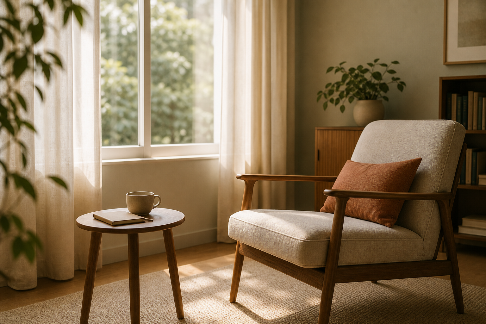

Reflexão
A solidão, o mal do século!

A Solidão! Outro grande mal do nosso tempo, que pode levar à depressão. Com tanta gente ao redor, como sentir-se solitário? Por falta de amizades íntimas, vínculos profundos. E quantas pessoas estão dispostas a dedicar tempo e atenção a outras? Existe dificuldade de se aproximar por timidez, medo de ser rejeitado e ser julgado.
O espaço psicanalítico propõe justamente o contrário, é o estar junto, o vínculo verdadeiro e profundo, mas respeitando o tempo do indivíduo de aproximação, sem invadir. É o lugar do caminho a dois, de descoberta e enfrentamento de si mesmo, podendo rir, chorar, ficar em silêncio, ser quem se é, sem papéis para se proteger ou atender expectativas.
E mais: aprender a solitude, de estar bem só, aproveitar seu momento consigo, aprender a ter a própria companhia, como a melhor! A preencher ou diminuir o vazio dentro de si, ao redor, a encontrar novas formas de se relacionar. A Psicanálise é um caminho para alcançar tudo isso!